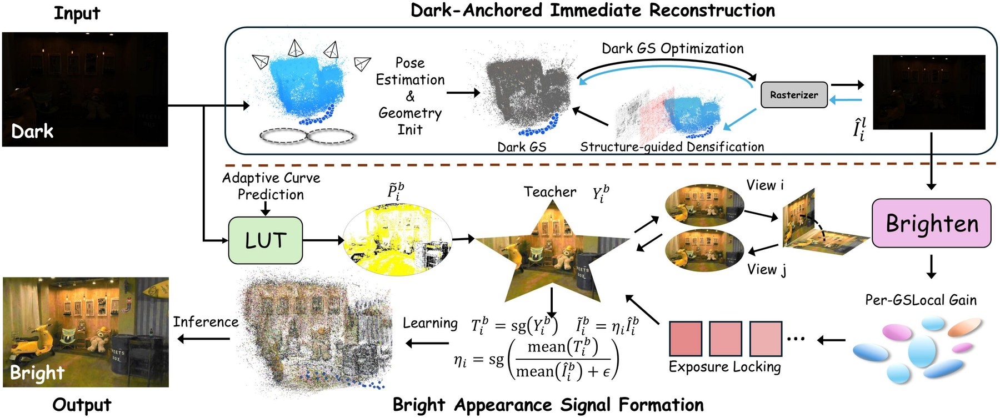
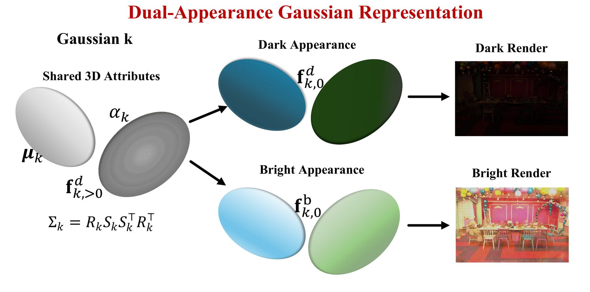
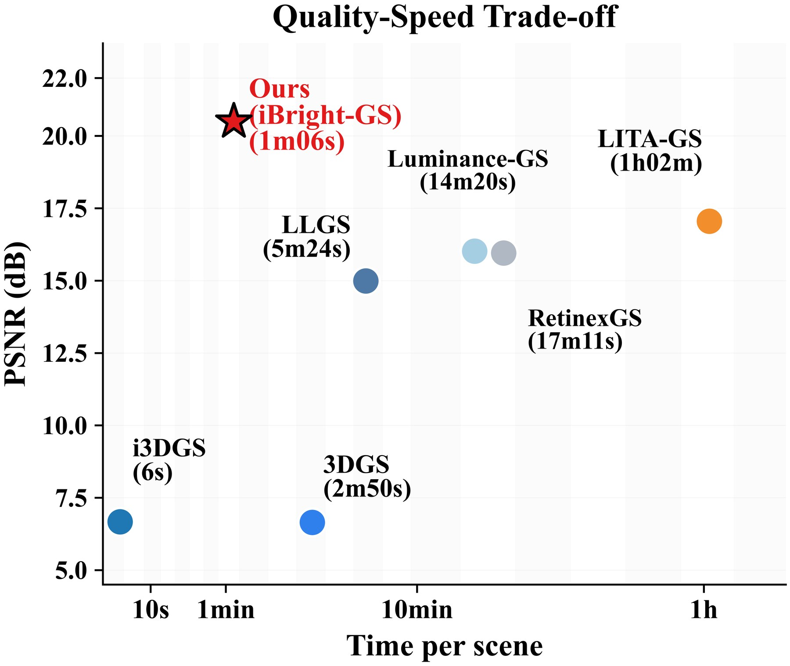

iBright-GS reconstructs a directly renderable bright 3D Gaussian scene from unordered low-light views only. Normal-exposure images are never used in training. Drag the viewer to inspect any novel view.
Drag to orbit · scroll to zoom · right-drag to pan. Renderer is Spark (same family as SuperSplat). Bright/Dark share geometry; only SH0 appearance changes.
Training 3D Gaussian Splatting exclusively on low-light images anchors the learned appearance to dark observations, which leads to persistently dim novel-view renderings even when the geometry is fully recovered. To tackle this issue, we propose iBright-GS, a framework that learns bright-view Gaussian appearance representations solely from low-light multi-view inputs. It first stabilizes geometric optimization via raw low-light photometric constraints to preserve the intrinsic dark appearance distribution of inputs and avoid premature photometric drift that degrades geometric fidelity. A unified training-stage bright signal is then constructed by synergistically combining a curve- and LUT-based pseudo-bright target, a dark-render brightening branch, per-Gaussian local gain, global exposure lock, and multi-view consistency. After geometry converges to a stable state with negligible structural perturbation, the constructed bright signal guides the optimization of dedicated bright Gaussian appearance coefficients. The learned bright representation can be directly rasterized at inference without additional post-processing, view-specific adjustment, or reference guidance. Extensive evaluations on LOM and RealX3D benchmarks illustrate that iBright-GS achieves state-of-the-art average PSNR and SSIM performance, with substantially higher runtime efficiency than existing advanced offline low-light 3DGS baselines.



Held-out novel views. Training uses low-light images only; GT is normal-light evaluation.
| Method | LOM | RealX3D | ||||||
|---|---|---|---|---|---|---|---|---|
| PSNR↑ | SSIM↑ | LPIPS↓ | Time | PSNR↑ | SSIM↑ | LPIPS↓ | Time | |
| 3DGS | 6.74 | 0.137 | 0.603 | 2:01 | 6.60 | 0.061 | 0.691 | 3:17 |
| i3DGS | 6.79 | 0.136 | 0.579 | 0:04 | 6.60 | 0.056 | 0.694 | 0:07 |
| LLGS | 17.74 | 0.783 | 0.330 | 4:02 | 12.35 | 0.493 | 0.609 | 6:09 |
| Luminance-GS | 18.69 | 0.784 | 0.310 | 6:54 | 14.54 | 0.514 | 0.489 | 18:27 |
| LITA-GS | 20.16 | 0.792 | 0.304 | 27:25 | 15.33 | 0.510 | 0.480 | 81:35 |
| RetinexGS | 21.09 | 0.823 | 0.257 | 12:06 | 13.04 | 0.513 | 0.477 | 20:01 |
| iBright-GS | 23.63 | 0.819 | 0.288 | 0:22 | 18.77 | 0.646 | 0.475 | 1:31 |
Best in bold, second-best underlined. Runtime is per-scene wall-clock time on RTX 4090.
RealX3D GearWorks. Removing the bright SH0 branch collapses back to dark fitting.
@inproceedings{ibrightgs,
title = {iBright-GS: Immediate Bright Gaussian Reconstruction from Low-Light Views},
author = {Anonymous},
booktitle = {Under review},
year = {2026}
}